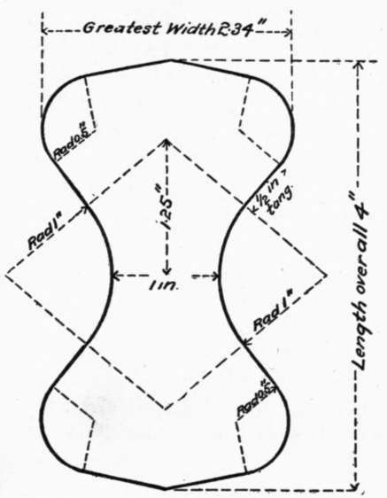

175. Steinbruch's Mortar Mixer. Continued
Description
This section is from the book "Cement And Concrete", by Louis Carlton Sabin. Also available from Amazon: Cement and Concrete.
175. Steinbruch's Mortar Mixer. Continued
179. Form Of Briquet Suggested
As a result of experiments which will be described under the head of "Clips,"1 (Art. 25) the following conclusions were drawn as to the desirable features for a briquet:
1st
The smallest section should not have an area much less than one square inch. Probably an area of five square centimeters would represent a minimum.
2d
The area of the section of the briquet between opposite gripping points should be about one and three-fourths times the area of the smallest section.
3d
The distribution of stress over the smallest section should be as nearly uniform as possible.
4th
The curve of the sides at the breaking section should not be very sharp; one-half inch might be taken as a minimum radius.
5th
The area of the vertical section from the gripping point to the plane of the end of the briquet — the section subjected to shear when the stress is applied — should be nearly as great as the area of the neck of the briquet.
1 These experiments were described by the writer in detail in "Municipal Engineering" Dec, 1896, Jan. and Feb. 1897.
6th
The face and back of the briquet should be parallel planes, to permit of easy storage.
7th
The total volume should be kept as small as is consistent with the other conditions.
Fig. 5 represents a form of briquet which will, it is thought, satisfactorily fulfill the above requirements, and in which it is believed the full strength of the smallest section may be more nearly developed than with present forms. The curve at the central section has a radius of one inch, and the line of the side of the briquet is continued in a tangent one-half inch in length, having an inclination of nearly 45 degrees with the axis of the briquet. The total length of the briquet is four inches, the ends being formed by straight lines tangent to the curves forming the corners. If the clip is so formed that the gripping points bear at the centers of the one-half inch tangents forming the sides of the briquet, the distance between opposite gripping points will be 1 3/4 inches.
Fig. 5. FORM OF BRIQUET SUGGESTED FOR USE.
180. Comparison With Other Forms
Comparing this briquet with the forms in common use, the German and the form shown in Fig. 5 both have an area between opposite gripping points about 1 3/4 times the area of the smallest section, but in the form shown in Fig. 4 this ratio is too small to fulfill the second specification.
The unequal distribution of stress over the breaking section of the briquet has already been mentioned as a probable partial cause why briquets of small cross-section show a greater strength per unit area than those having a larger area of cross-section. In Johnson's "Materials of Engineering" is given the theory of the distribution of stress over the breaking section of a briquet, as developed by M. Durand-Claye, and published in Annales des Ponts et Chaussees of June, 1895. Applying the formulas there given to three styles of briquet, the A. S. C. E. form of 1885, the German standard, and the form shown in Fig. 5, it is found that the ratios of the maximum stress to the mean stress are, for the three forms respectively, 1.54, 1.52 and 1.22. From a theoretical point of view, this means that with a total pull of 100 pounds on each briquet, the outer fiber of the briquet shown in Fig. 4 would be subjected to a stress of 154 pounds per square inch, while with the form suggested above, the stress on the outer fiber would be but 122 pounds per square inch ; briquets of the latter form should, therefore, theoretically, show a breaking strength 1.27 times the strength given by briquets of the same mortar made in the A. S. C. E. form of 1885.
The German form has too sharp a curve at the sides to fulfill the fourth requirement given above. All of the forms comply with the first, fifth and sixth requirements.
As to the volume of the briquet, the author's form having a total length of four inches, has about 50 per cent, greater volume than the A. S. C. E. form of 1885.
181. Molds
In the early tests of cement, wooden molds were employed, but they absorb water from the mortar and soon warp out of shape. Iron molds have also been used to a considerable extent, but these are apt to become rusted if not in constant use. Brass, bronze or some similar metal not easily corroded should be used, and molds of this character can be obtained of dealers in testing apparatus.
The molds may be made single, or in "nests" or "gangs" of three to five. The two halves of the mold may be entirely separable, or may be hinged at one end and fastened by a clip at the other end. The gang molds are somewhat cheaper than the single ones. The hinged molds and those held with patent clip are rather difficult to clean, while the gang molds, if made heavy enough to prevent spreading, are unwieldy, and briquets are removed from them with greater difficulty than from the single molds. It is considered, therefore, that the most convenient form is the single mold, in which the two halves are held together by a screw clamp of simple design.
182. To clean these molds, place ten in a row with clamps removed ; scrape the upper faces with a piece of zinc, brush with a stiff "horse-brush," and wipe with oily waste. Turn them over and repeat the process. Then separate the two halves of each mold, place the twenty halves in line with inner surfaces up, forming a trough twenty inches long. Wipe this trough thoroughly with oily waste, finishing with some that is only slightly oiled.
183. Molding
methods of molding briquets vary widely and have a considerable effect on the results obtained by different operators. The mold may be placed on a glass or marble slab, or on a porous bed. This difference in treatment will affect the results chiefly because a porous bed will extract moisture from the briquet, and, unless it is already mixed very dry, will make it give a higher result on a short time test. The use of a porous bed probably originated with a desire to more closely imitate the use of mortar in actual work, but it introduces another source of variation in results and should not be followed.
184. In hand work the whole mold may be filled at once, or small amounts of mortar may be added at a time, and each layer packed; the mortar may be tamped into the mold with a rod, in which case the pressure used may vary widely; or the mortar may be pressed in with the fingers, or with the point of a small trowel; and, finally, the pressure applied on the top of the whole briquet may be light or heavy. It is evident that it is almost impossible to so describe all these details of manipulation that another operator may follow the same system and obtain the same results. The practice of ramming the mortar into the mold by means of a metal rod or a stick faced with zinc is objectionable, because of the possible wide variation in the force thus applied. This method is sometimes used by manufacturers, since by making the mortar quite dry and ramming it into the molds very hard, a high initial strength is obtained. But the foremost cement makers are now eschewing such methods and are aiming to make fair tests. Some experiments made under the author's direction indicate that the pressure applied to the top of the briquet is the salient point in the process of molding, and that the other details are of minor importance.
In Germany a heavy trowel or iron plate weighing about 250 grams, and provided with a handle, is used in making one-to-three mortar briquets. The mortar is made rather dry (about 10 per cent, water), and after the mold is filled and heaped, the mortar is beaten with the trowel until it becomes elastic, and water appears on the surface. The excess of mortar is then scraped off with an ordinary trowel or spatula.
185. Several machines have been devised for making briquets, some of which are said to give good results. Among these the most prominent is the Bohme hammer apparatus, which is much used in Germany, although not employed to any extent in the United States. It consists of a plunger which fits the mold and upon which a given number of blows are struck by a hammer. The mortar is first gaged as for hand molding, and placed in the form. A pinion, turned by a hand crank, is geared to a wheel provided with ten cams. These cams operating on the wrought iron handle of the hammer cause a certain number of blows to be delivered to the plunger. The mechanism is automatically shut off after the proper number of blows has been delivered. The following results were obtained by Professor Bohme with his apparatus: —
Table 32. Comparison Of Hand Made Briquets With Those Made By Bohme Hammer
No. | method. | Weight of Briquets. | Mean Tensile Strength at 7 Days in Kgs. per Sq. Cm. |
1 | By hand | 160.0 | 16.06 |
2 | Hammer, 75 blows | 158.0 | 12.75 |
3 | " 100 " | 159.5 | 13.25 |
4 | " 125 " | 159.5 | 14.56 |
5 | " 150 " | 159.0 | 15.56 |
186. Several American engineers have devised machines for briquet-making, but none of them has been generally adopted.
An apparatus designed by Prof. Charles Jameson, of Iowa University, is said to work very rapidly. The mortar is packed in the mold by a plunger of the form of the briquet. This plunger works in a chamber of the same shape as the briquet mold. The mortar is placed in a hopper at the side of this chamber, and is delivered to the mold automatically when the plunger is raised. The force is applied to the plunger by hand, but it should be so arranged that this be done by a weight, to prevent variations in pressure. In this method the briquet is removed from the mold as soon as made, and this would appear to be an objectionable feature.
Professor Spalding, of Cornell University, in his excellent little book on "Hydraulic Cement," states that he has found that "a pressure of about 500 pounds upon the surface of the briquet is sufficient to produce a compact and homogeneous briquet, and a crude appliance consisting of a lever arranged to bring a pressure upon the mortar in the mold by means of a weight suspended at the end of the lever, has been found to increase both the rapidity and the regularity of the work, and especially to diminish the variations in results obtained by different men".
A machine which would give more uniform results and work more rapidly than hand molding, would commend itself for general use.
Continue to: